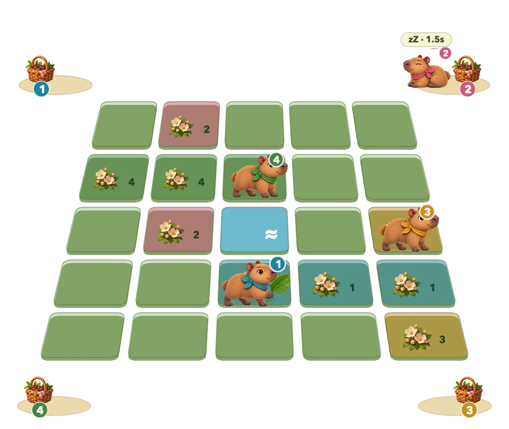

Trening
Graj z komputerowymi przeciwnikami. Wybierz polanę, tempo i poziom trudności. Działa bez internetu.
LEMRIC · GRA
Gra na iPhone’a, iPada i Maca. Zasadź pięć kwiatów w jednej linii i utrzymaj je przez dwie sekundy, aby wygrać rundę.
Bez konta, reklam i zakupów w aplikacji.

Graj z komputerowymi przeciwnikami. Wybierz polanę, tempo i poziom trudności. Działa bez internetu.
Połączcie się przez Bluetooth. Gospodarz tworzy pokój i podaje kod. W grze mogą uczestniczyć cztery osoby.
Graj na zgodnym serwerze. Ten tryb wymaga dostępnego serwera i jego zaufanego klucza publicznego.
iPhone i iPad: graj poziomo. Sterowanie jest po lewej, orzech i liść po prawej.
Mac: WASD lub strzałki. Kierunek + Spacja rzuca orzech; sama Spacja rozwija liść.
Możesz też użyć pada. Liście są dostępne na polanach 5 i 6.
Wymaga iOS / iPadOS 17 lub nowszego albo macOS 14 lub nowszego.
Ustawienia są zapisywane na urządzeniu. Sesje sieciowe wymieniają dane rozgrywki. W menu i treningu aplikacja sprawdza również skonfigurowany serwer. Szczegóły znajdziesz w polityce.
Polityka prywatnościZgłoś błąd, zadaj pytanie lub zaproponuj zmianę.
Pomoc i kontakt